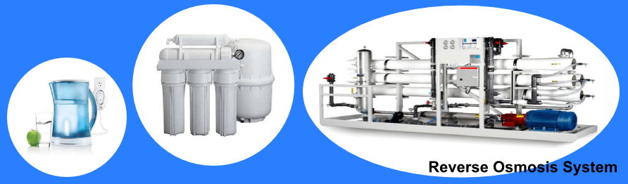
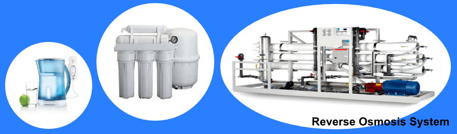

UV and Ozone
Ozone disinfection
Ozone is an unstable molecule which readily gives up one atom of oxygen providing a powerful oxidizing agent which is toxic to most waterborne organisms. It is a very strong, broad spectrum disinfectant that is widely used. It is an effective method to inactivate harmful protozoa that form cysts. It also works well against almost all other pathogens.

Ozone is created with what is called an Ozone Generator. It creates O3 in much the same way as the sun does. A chamber with a high intensity Ultraviolet (UV) light is filled with compressed air which then converts some of the oxygen in the air into ozone.
This ozone is then sent through a line into a diffuser, which creates ozone-saturated bubbles. Water is drawn in to mix with the bubbles, and then fed into the water purification tank.
The weak Oxygen molecule in the Ozone attaches to other organic molecules in the water and oxidizies them.
The ozone water purification system is one of the most advanced water treatment processes in the water industry.
Advantages:
- Ozone is primarily a disinfectant that effectively kills biological contaminants.
- Ozone also oxidizes and precipitates iron, sulfur, and manganese so they can be filtered out.
- Ozone will oxidize and break down many organic chemicals including many that cause odor and taste problems.
- Ozonation produces no taste or odor in the water.
- Ozone is made of oxygen and reverts to pure oxygen and it vanishes without a trace once it has been used.
UV Treatment
UV is Ultraviolet radiation, an energy band within the electromagnetic energy spectrum. Its wavelength is between that of visible light and x-rays and it has been found to be an effective method for destroying germs in a water supply.

UV destroys germs by causing a molecular change in their DNA makeup that prevents them from multiplying and destroys the ability to spread disease. When germs cannot multiply, they are considered dead.
Different germs can tolerate different amounts of UV light and therefore require varying amounts of UV energy to be destroyed. By definition, dosage is the intensity of UV light multiplied by time. The intensity is the amount of UV energy that the UV lamp produces at a certain distance from its surface per square centimeter of the lamp’s area. The time is the period it actually takes the water to travel inside the UV chamber.
Advantages of UV Water Treatment Systems:
- UV is effective and quick. No need for holding tanks and reaction times. No need for storing chemicals.
- UV does not alter the taste of water, which makes it ideal for use in bottling plants and food processing applications.
- UV is safe. NO need to add or handle hazardous chemicals or risk polluting the environment.
- UV is compatible with all other water treatment processes. No need for de-chlorination if using RO systems. In fact, UV enhances the use of other water treatment by keeping them free from germs.
- UV is economical. Almost always, the cost of UV disinfection units is much less than the cost of chemical treatment systems. The cost of service and maintenance of UV units is very low. The electrical running cost of an UV unit in a house is about that of a regular light bulb.
- UV is more effective against viruses than chlorine.
- Easy installation. UV units are very easy to install and require very little space.